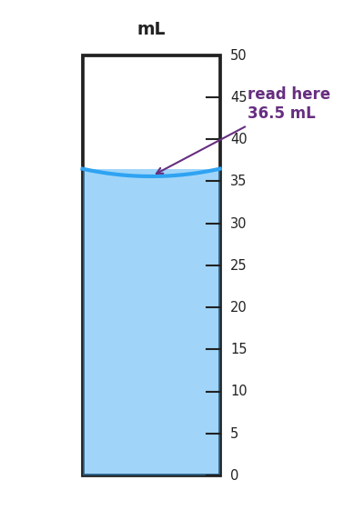
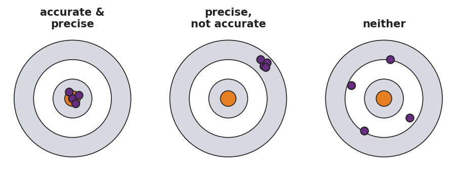

01 Phenomenon
In 1999, NASA’s Mars Climate Orbiter was lost because one engineering team reported thruster force data in pound-force while another team’s software expected newtons. The numbers were calculated correctly — but the units did not match. The spacecraft burned up in the Martian atmosphere instead of entering orbit. $125 million, gone.
02 Driving question
Why does the whole world's science agree on one set of units?
03 Notice & wonder
| I notice… | I wonder… |
|---|---|
Turn & Talk #1: The engineers both did their math correctly. In one sentence, describe what actually happened to the spacecraft — without using the word “units.”
04 Initial model
Before your teacher explains anything, write your best guess: what measurements will you take in chemistry class this year? For each one, list the unit you’d use and the tool you’d use to take it. Include at least four rows.
| Quantity I’ll measure | Unit I’d use (guess) | Tool I’d use (guess) |
|---|---|---|
05 Investigate
Measurement Stations — Data Table
Record every measurement with its number and its unit. A number without a unit is not a measurement.
Station 1 — Volume (graduated cylinder)
First, examine the figure below and record what you read.

Figure reading: _____________ mL
Now take three independent readings of the real graduated cylinder at your station. Read the bottom of the meniscus. Do not look at your partner’s reading before you write your own.
| Reading | Value (mL) |
|---|---|
| Trial 1 | |
| Trial 2 | |
| Trial 3 |
Station 2 — Mass (balance)
Zero the balance before each measurement. Record in grams, then convert the largest mass to kilograms.
| Object | Mass (g) |
|---|---|
| Small rock | |
| Pencil | |
| Eraser |
Largest mass in kilograms: _____________ kg (show conversion below)
Station 3 — Temperature (thermometer)
Read at eye level. Record in both °C and K. (Use your Reference Table for the conversion.)
| Sample | Temperature (°C) | Temperature (K) |
|---|---|---|
| Room-temperature water | ||
| Ice water |
Station 4 — Length (metric ruler)
Measure to the nearest millimeter.
| Object | Measurement (mm) | Convert to cm |
|---|---|---|
| Width of this worksheet | ||
| Length of your pencil |
06 Make it make sense
- Match each quantity to its SI unit and the instrument used to measure it. Draw a line or fill in the table.
| Quantity | SI unit | Instrument |
|---|---|---|
| Mass | ___________ | ___________ |
| Volume | ___________ | ___________ |
| Length | ___________ | ___________ |
| Temperature | ___________ | ___________ |
A graduated cylinder is filled with liquid. The meniscus curves downward (concave). A student reads 38.0 mL at the top edge where the liquid touches the glass, but the bottom of the curve reads 37.2 mL. Which reading is correct, and why?
Correct reading: _____________ mL
Why: _______________________________________________ _______________________________________________
Two students measure the same object repeatedly. Student A gets: 14.1 g, 14.2 g, 14.1 g, 14.2 g. Student B gets: 14.1 g, 11.8 g, 15.3 g, 13.0 g. The true mass is 17.5 g.
Classify each student’s data:
Student Precise? (yes/no) Accurate? (yes/no) Student A Student B Look at the figure below. Which dartboard best represents Student A’s data? ___________
Which best represents Student B’s data? ___________

07 Key vocabulary
- SI unit
- the internationally agreed metric unit for a physical quantity; examples include the meter (m) for length, kilogram (kg) for mass, second (s) for time, kelvin (K) for temperature, and liter (L) or milliliter (mL) for volume; using SI units allows data from any lab on Earth to be compared and combined without conversion
- precision
- how close repeated measurements of the same quantity are to one another; high precision means the readings cluster tightly, regardless of whether they are close to the true value; precision reflects the consistency of an instrument or technique
- accuracy
- how close a measurement (or the average of repeated measurements) is to the true or accepted value; high accuracy means the measured value matches what is actually there; accuracy reflects correctness, not just consistency
Use each term in a sentence about today’s phenomenon or investigation. Do not copy the definition — use the word to describe something you observed or did.
SI unit: _______________________________________________ _______________________________________________
precision: _______________________________________________ _______________________________________________
accuracy: _______________________________________________ _______________________________________________
08 Revise your model
Return to your Initial Model. Update the unit column with the official SI unit for each quantity. Circle any row where your original guess was different from the SI unit.
Then finish this Because / But / So sentence:
A measurement recorded as “5.2” with no unit is not a complete measurement because __________________________________________, but __________________________________________, so __________________________________________.
09 Exit ticket
A student measures the same liquid four times: 24.9 mL, 25.0 mL, 24.8 mL, 25.1 mL. The true value is 30.0 mL.
- Is the data precise? Explain in one sentence.
- Is the data accurate? Explain in one sentence.
- In one sentence, explain the difference between precision and accuracy. You may use the word “dartboard” or the word “true value.”
10 Explore further
- Measurement stations (core, this lesson): students rotate through four stations — volume (graduated cylinder), mass (triple-beam or electronic balance), temperature (thermometer), length (metric ruler) — recording each measurement with its SI unit. At the volume station students read the figure below and a real graduated cylinder to the bottom of the meniscus.
- Estimating first, then measuring: before each station, students record a written estimate; after measuring, they compare estimate to actual and discuss what "close" means in chemistry.
- Repeated-measurement precision check: students read the same real graduated cylinder three times independently; if repeated readings cluster, the data are precise. Compare to a miscalibrated or tilted cylinder to demonstrate accurate-but-not-precise vs. precise-but-not-accurate.